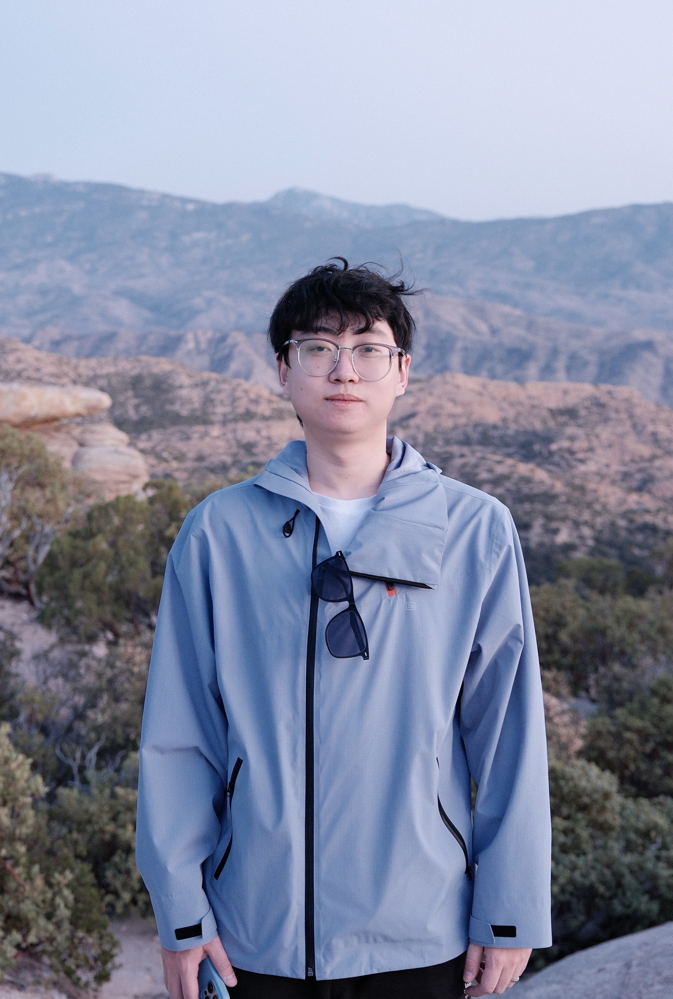

University of Arizona
PhD in Astronomy and Astrophysics · Advisors: Eiichi Egami & Xiaohui Fan
2023 – present

PhD Student, Department of Astronomy & Steward Observatory
University of Arizona · Tucson, AZ
I am a PhD student in Astronomy and Astrophysics at the University of Arizona, working with Prof. Eiichi Egami and Prof. Xiaohui Fan. I use JWST imaging and slitless spectroscopy to find and characterize accreting black holes in the first billion years of cosmic history.
Much of my work centers on little red dots — the compact, red, broad-line sources that JWST has uncovered in abundance at high redshift — and on what they tell us about how supermassive black holes and their host galaxies grew together. I am part of the CONGRESS, FRESCO, and JADES survey efforts in the GOODS fields.
Before Arizona I completed a triple major in Mathematics, Physics, and Astronomy at Penn State University.
Finding and weighing accreting black holes at z > 4 with broad-line spectroscopy.
Physical properties, morphology, and selection of JWST's puzzling compact red population.
Black hole–galaxy co-evolution, AGN-driven multiphase outflows, and star formation histories.
Steward Observatory, University of Arizona
933 N Cherry Ave, Tucson, AZ 85719, USA
junyuzhang@arizona.edu